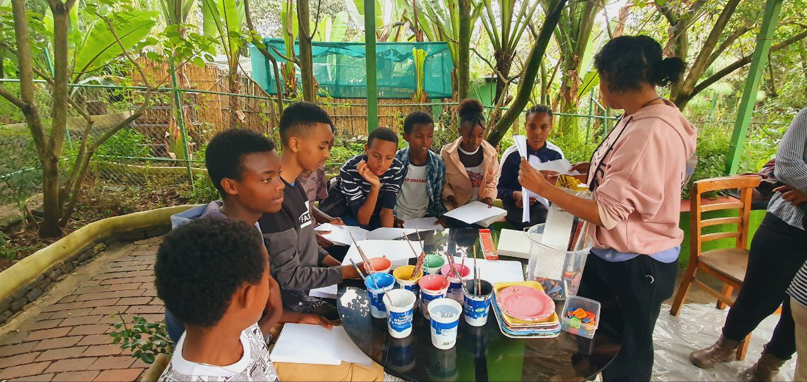
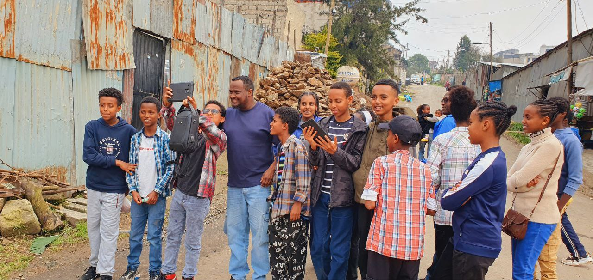
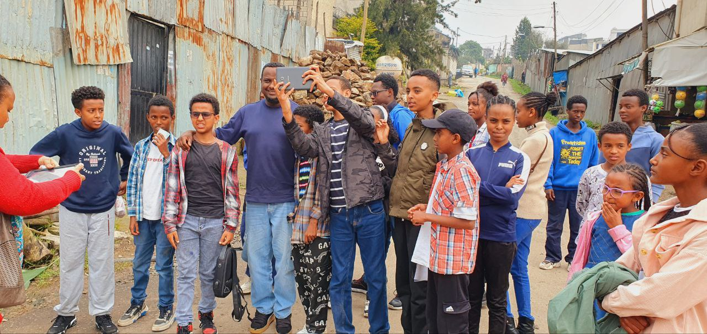
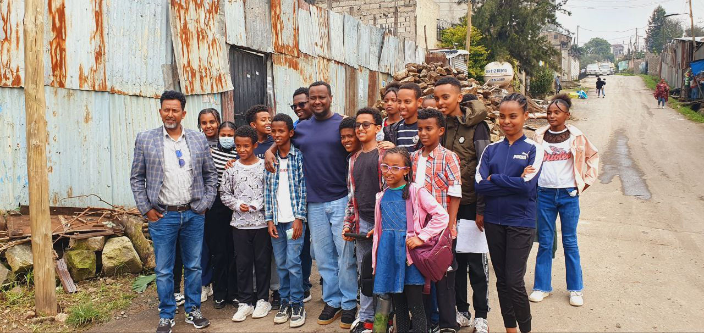

The Children’s Ministry at Genet CMC Local Church is dedicated to nurturing the spiritual growth of our youngest members through biblical teaching, worship, and fun activities that help them learn about God’s love.
Programs & Activities
- Sunday School Classes for All Ages
- Kids Worship and Bible Stories
- Vacation Bible School (VBS)
- Creative Arts and Drama Sessions
- Community Outreach and Fun Days
Children’s Ministry in Pictures




Contact Children’s Ministry
Email: children@cmcgenetchurch.org
Phone: +251 919078605